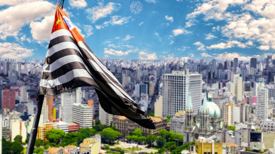
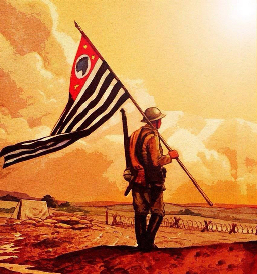
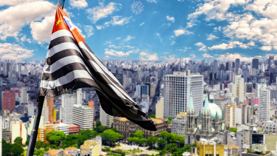
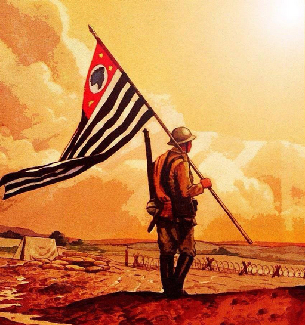

O ESTADO DE SÃO PAULO
O Estado de São Paulo está localizado na região Sudeste do Brasil. A capital é São Paulo e a sigla SP.
O processo de colonização de São Paulo começou em 1532, com a vila de São Vicente, a mais antiga do Brasil.
A vila foi fundada por Martim Afonso de Souza. De São Vicente partiam as expedições de bandeirantes que possibilitaram a exploração do restante do País.
Em princípio, estradas e trilhas foram abertas para a chegada ao interior do estado e, ainda, Rio de Janeiro e Minas Gerais.
São Paulo é o estado mais populoso do Brasil. Seus habitantes são formados por diversos povos, principalmente índios, que já estavam na região na época do descobrimento, negros e brancos europeus de várias nacionalidades.
A construção da história de São Paulo contou com a presença dos colonizadores portugueses e de representantes de outras 70 nacionalidades. Os imigrantes chegaram ao estado em momentos diferentes, sempre movidos pela economia.
Entre os imigrantes que contribuíram para a construção da história de São Paulo estão os negros, escravizados nas lavouras de café e cana-de-açúcar.
Também fizeram parte do processo italianos, alemães, árabes, espanhóis e japoneses. A presença italiana é marcante, com um bairro formado por imigrantes dessa nacionalidade, o Bexiga, na cidade de São Paulo.
O mesmo ocorreu com os japoneses, que estão concentrados no bairro da Liberdade, também na capital paulista.
O estado contribui com a maior fatia do PIB (Produto Interno Bruto) brasileiro, com quase 30% do total. A maior parte da economia é centrada na indústria de transformação. Fica em São Paulo, e na sua respectiva região metropolitana, o maior parque industrial do país.
A agricultura também é uma marca forte da região, com ênfase para a pecuária de corte e a produção de cana-de-açúcar.
Entre os imigrantes que contribuíram para a construção da história de São Paulo estão os negros, escravizados nas lavouras de café e cana-de-açúcar.
Ente os motivos que justificam os significativos números da economia paulista está o posicionamento geográfico. No centro-sul do País e, ainda, com saída pelo mar. Em São Paulo está situado o maior e mais movimentado porto do Brasil, localizado em Santos.
Em consequência da população elevada e da circulação de recursos financeiros, os setores de comércio e serviços também merecem destaque na economia. A região metropolitana concentra mais de 200 shoppings-centers e abriga uma larga rede de multinacionais.
Desde a fundação, até meados do século XIX, a economia do local estava centrada na subsistência, principalmente com base agrícola. Os principais produtos eram o café e a cana-de-açúcar.
A diversidade econômica foi impulsionada com a chegada de imigrantes europeus, com destaque para os italianos, após o fim da escravidão dos negros.
A chegada dos italianos e outros imigrantes contribuiu para a oferta de qualificação de mão-de-obra, abertura de estradas e construção de linhas ferroviárias.
Os modais de transporte permitiam o escoamento da produção para os demais estados e a construção do porto de Santos favoreceu a exportação.
A economia paulista também foi favorecida pelo controle político que o estado exerceu no país por vários períodos. Após a Proclamação da República, dirigentes de São Paulo alternaram-se na Presidência com políticos de Minas Gerais.
Era a chamada Política do Café com Leite. Tendo controle da política, os políticos favoreciam a distribuição de recursos para seus respectivos estados.
A oferta de bens culturais em São Paulo é ampla devido à idade da região e à já mencionada influência de diversos povos. A maior parte da riqueza cultural de São Paulo está concentrada na capital.
Entre os destaques estão monumentos, como a Catedral da Sé e a Igreja da Ordem Terceira do Carmo. A primeira, de estilo neo-gótico, foi entregue em 1967, e a segunda, no estilo barroco, no século XVIII.
A diversidade de museus é reconhecida internacionalmente. Estão em São Paulo o Masp (Museu de Arte de São Paulo), o MAC (Museu de Arte Contemporânea) e o museu Lasar Segall.
O estilo da cultura urbana é revelado com a oferta de parques, como o Ibirapuera, projetado por Oscar Niemeyer e Burle Marx.
A área compreendida pelo Estado de São Paulo está situada em regiões de planalto e litoral. O planalto compreende a maior parte do território, chegando a 90%. Já a região litorânea atinge 622 quilômetros de costa, com a presença de praias, maciços e manguezais.
O clima é de influência tropical úmido. As temperaturas médias estão situadas em 22º na maior parte do ano.
O território é atravessado pela bacia do Paraná. Os principais afluentes são: rio Grande, Tietê e Paranapanema.
 




AS CIDADES DE SÃO PAULO
Diadema é um município do estado de São Paulo, na Região Sudeste do Brasil. Ocupa uma área de 30,732 km² e sua população estimada pelo IBGE para 1.º de julho de 2021, era de 429,550 habitantes naquela data. É o 14.º município mais populoso do estado e o 57.º do Brasil.
Embu das Artes, ou simplesmente Embu, é um município da Região Metropolitana de São Paulo, na Microrregião de Itapecerica da Serra, no estado de São Paulo, no Brasil.
Guarulhos é um município da Região Metropolitana de São Paulo, no estado de São Paulo, no Brasil. É a segunda cidade mais populosa do estado, a 13ª mais populosa do Brasil e a 53ª mais populosa do continente americano, com 1 392 121 habitantes, segundo estimativa do Instituto Brasileiro de Geografia e Estatística (IBGE) para 1.º de julho de 2020
Itapecerica da Serra é um município brasileiro do estado de São Paulo localizado na Região Metropolitana de São Paulo, e segundo a última divisão regional feita pelo IBGE fica localizado na Região Geográfica Imediata de São Paulo.
Osasco é um município brasileiro localizado na Região Metropolitana de São Paulo, no estado de São Paulo, no Brasil. Nascido como um bairro da capital paulista no final do século XIX, tornou-se município emancipado após um plebiscito em 1962.

Santo André é um município brasileiro da Região do Grande ABC, localizado na Zona Sudeste da Grande São Paulo, parte da Região Metropolitana de São Paulo, em conformidade com a lei estadual nº 1.139, de 16 de junho de 2011 e, consequentemente, com o Plano de Desenvolvimento Urbano Integrado da Região Metropolitana de São Paulo (PDUI).

Santos, uma cidade costeira no estado de São Paulo, no sul do Brasil, é uma importante extensão do porto marítimo que vai do continente à ilha de São Vicente. O centro urbano da ilha faz fronteira com a Baía de Santos, conhecida pela sua extensa praia e pelo jardim adjacente de 5,3 km de comprimento. O Museu do Café, que ocupa uma bolsa de mercadorias de 1922 preservada na zona histórica, explora o papel fundamental da área para o comércio de café do Brasil.
Sorocaba é um município brasileiro no interior do estado de São Paulo. É a quarta mais populosa do interior paulista e a mais populosa da região sudeste paulista com uma população de 695.328 habitantes, estimada pelo IBGE para 2021, sendo uma capital regional. Possui uma área de 450,38 km².
São Paulo, centro financeiro do Brasil, está entre as cidades mais populosas do mundo, com diversas instituições culturais e uma rica tradição arquitetônica. Há prédios simbólicos como a catedral neogótica, o Edifício Martinelli, um arranha-céu inaugurado em 1929, e o Edifício Copan, com suas linhas curvas projetadas pelo arquiteto modernista Oscar Niemeyer. A igreja em estilo colonial do Pátio do Colégio marca o local onde os padres jesuítas fundaram a cidade em 1554.
Taboão da Serra é um município brasileiro do estado de São Paulo, localizado na Zona Sudoeste da Região Metropolitana de São Paulo, em conformidade com a lei estadual nº 1.139, de 16 de junho de 2011 e, consequentemente a isto, com o Plano de Desenvolvimento Urbano Integrado da Região Metropolitana de São Paulo.
SOBRE NÓS
Desenvolveu o site.

Video base, referência para a construção do site!
REFERÊNCIAS
Gabriela Camargo - Taboão da Serra, SP